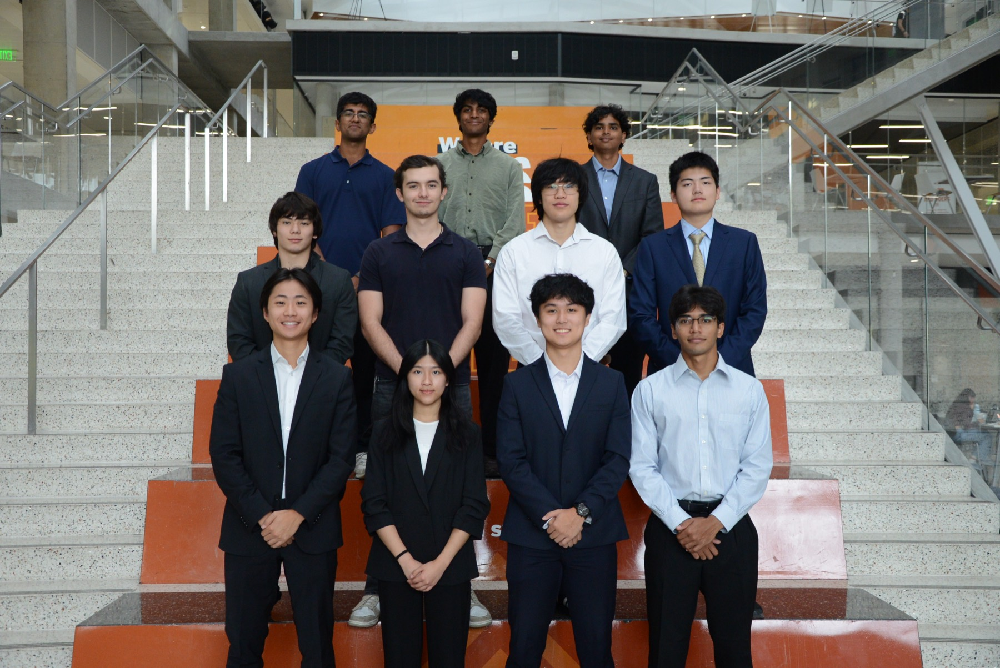
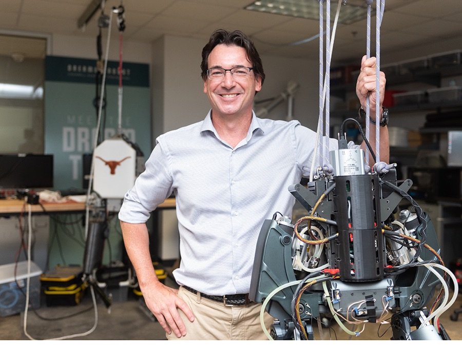
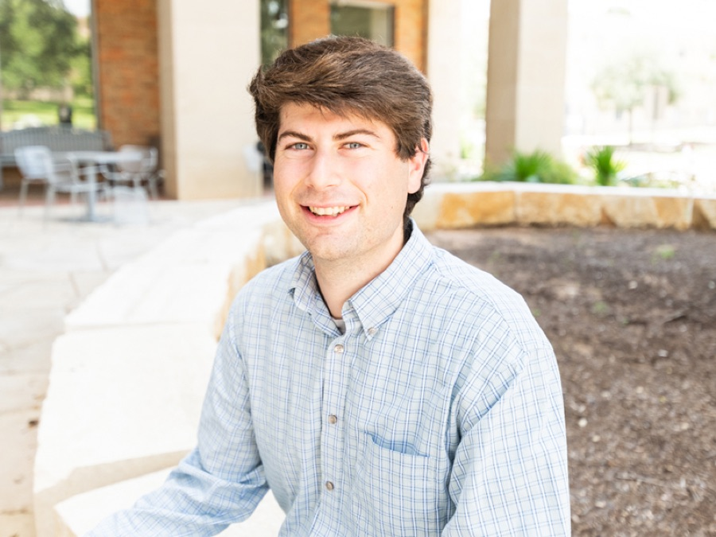

Team
Texas Humanoids was founded in August 2026. 160 students applied in our first recruiting cycle, and 40 engineers now work across 11 subteams.

Our first semester
Founded by three engineers as UT Austin's first undergraduate humanoid team.
160 applicants in our first recruiting cycle.
40 engineers selected across 11 subteams.
First walker leg designed, printed and assembled.
Four teams
Mechanical, electrical and software are split into 11 engineering subteams that together cover the full robot. Operations supports the whole organization.

The mechanical team designs the robot’s actuators, upper body, lower body and hands, from structural simulation and torque sizing through prototyping and testing.

The electrical team handles embedded systems, power systems and sensor integration, including custom CAN boards, power distribution and battery design.

The software team works on middleware, perception, controls and autonomy, including teleoperation, kinematic controllers and reinforcement learning for walking.

Operations runs corporate relations, finance, marketing and events for the organization.
Leadership
Aakash Akkineni
- Tesla Optimus
- Gradient Robotics
- Relativity Space
- Apple
- SpaceX
Aniketh Subramanian
- Tesla Optimus
- Sandia Labs
- Lockheed Martin
- ARL
Gilbert Khoi Tran
- Sierra Nevada Corp.
- FTI Delta
- IBM
- HyperBase
- Apple
- Blue Origin
- SpaceX
- Paradigm Robotics
- General Motors
- Tesla Optimus
- Lockheed Martin
- Sandia Labs
- IBM

Dr. Luis Sentis
Leads the Human Centered Robotics Laboratory. UT Austin's lead for DARPA's Robotics Challenge with NASA Johnson Space Center on the Valkyrie humanoid, NASA Elite Team Award recipient, and a founding member and innovation advisor of Apptronik. PhD and MS from Stanford.

Dr. David Fridovich-Keil
Affiliated with Texas Robotics, the Oden Institute and the Center for Autonomy. His research spans optimal control, dynamic game theory, learning for control and robot safety. PhD from UC Berkeley, postdoc at Stanford, and recipient of an NSF Graduate Research Fellowship and an NSF CAREER Award.
Join the team
Recruiting dates and applications are posted on our Linktree.